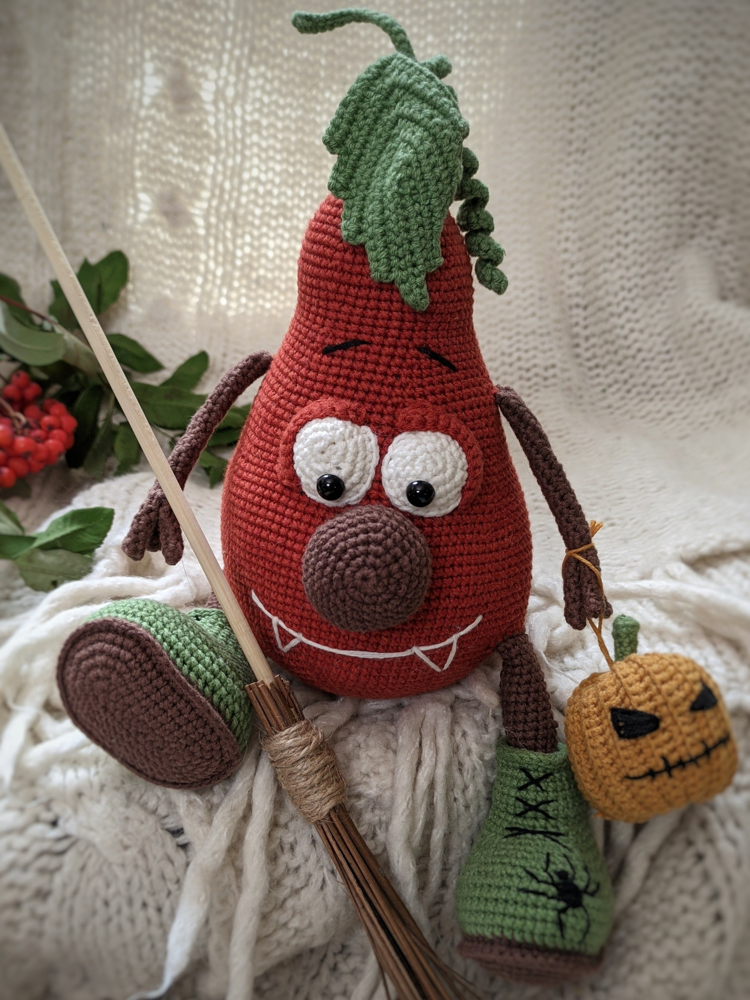
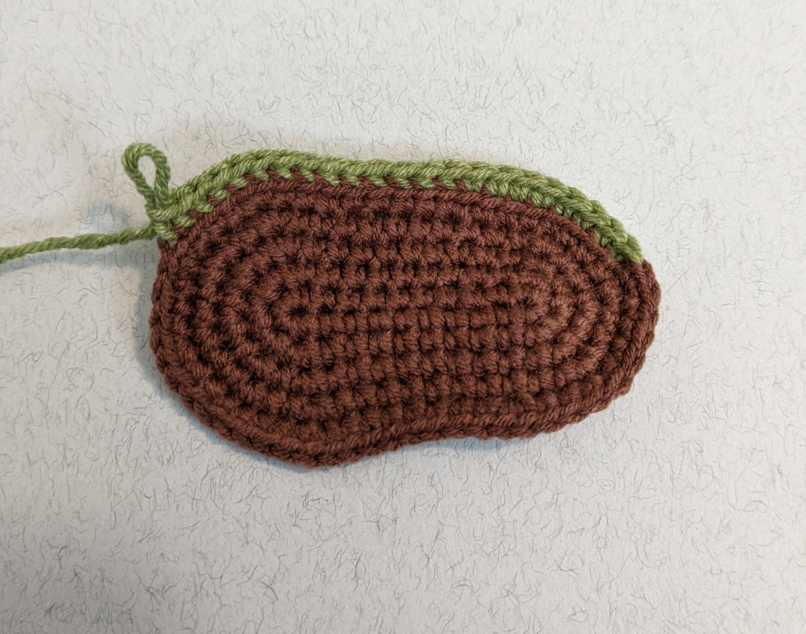
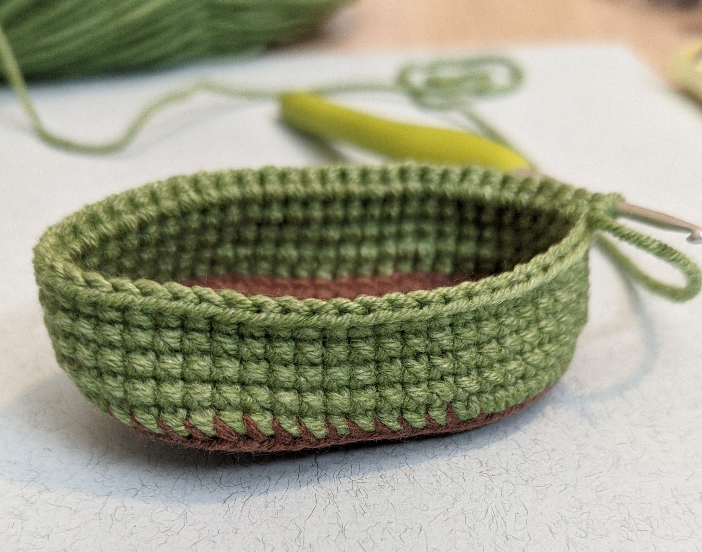

Halloween pumpkin pattern

I`ll tell you how to knit with a hook the fabulous pumpkin with leaf and lantern
toy. Size of this knitted toy is about 30 sm. If you use materials as shown.
Size of your own toy may be different from mine.
All details should be knitted spiral without lifting, unless otherwise
indicated. I am binding arms and legs in this toy, that`s why you
need to knit all the details of arm and hands before knitting the body.
I recommend you to use invisible deductions. This method gets you
rid from small holes when knitting. It is that you are knitting
deduction for front semi-loops, not both.
Materials:
- Crochet hook size 2,5 mm or any other suitable for your yarn
- Filler (holofiber)
- Sushi stick for detail forming
- Scissors
- Sewing needle for parts
- Child-safe eyes 8-10 mm
- Sushi stick for detail forming for broom shaft
- Twine
- A few dry twigs from any tree.
Yarns:
Alize Cotton Gold - Thread length: 330 meters, skein weight: 100 gr., contains 55% of cotton, 45% of acryl:
- Alize Cotton Gold – 36 terra. The main color for body;
- Alize Cotton Gold – 485 green. You need some. Color of shoes, Leaf, curl;
- Alize Cotton Gold – 60 black. You need some. Embroidery color;
- Alize Cotton Gold – 493 brown. You need some. Nose, arms, legs, sole;
- Alize Cotton Gold – 55 white. You need some. Color of eyes;
- Alize Cotton Gold – 2 mustard. You need some. Color of little pumpkin.
Let's start
Schematic symbols
Legs
Knitting of shoes (2 details):
Rnd 1-5 are outsoles. Let`s begin from brown yarn.
11 ch , start on the 2nd stitch from the hook:
- 1 rnd: 9 sc, 5 sc in same stitch, 8 sc, Inc (24)
- 2 rnd: Inc, 8 sc, Inc* 5, 8 sc, Inc* 2 (32)
- 3 rnd: 1 sc, Inc,8 sc, (sc, Inc)*5, 8 sc, (sc, Inc)*2 (40)
- 4 rnd: 2 sc, Inc,8 sc, (2 sc, Inc)*5, 8 sc, (2 sc, Inc)*2 (48)
- 5 rnd: (7 sc, Inc)*6 (54)
Connect the green yarn. Cut off the brown thread, hide the tail.


- 6 rnd Back loop only
- 6-10 rnd: 54 sc (5 rounds)
- 11 rnd: 8 sc, (2 sc, Dec)* 8, 14 sc (46)
- 12 rnd: 46 sc
- 13 rnd: 8 sc, (1 sc, Dec)* 8, 14 sc (38)
- 14 rnd: 38 sc
- 15 rnd: 8 sc, 8 Dec, 14 sc (30)
- 16 rnd: 30 sc
- 17 rnd: (3 sc, Dec) * 6 (24)
Home